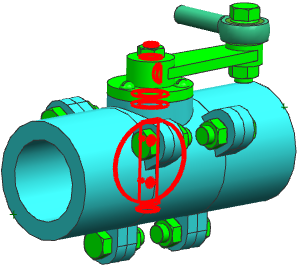

在装配导航器中，选择任意匹配... 文件夹。
按住 Ctrl 并选择 Interferes with Box FLOW_ZONE。
让您的鼠标光标停在两个选中的节点中的其中一个之上，右击并选择完全匹配... 组件组。
右击任意匹配... 并选择应用来高亮显示组件。
只有被全部组-Interferes with Box FLOW_ZONE 与任意匹配...-都选中的组件才会被选中。

关闭所有部件。